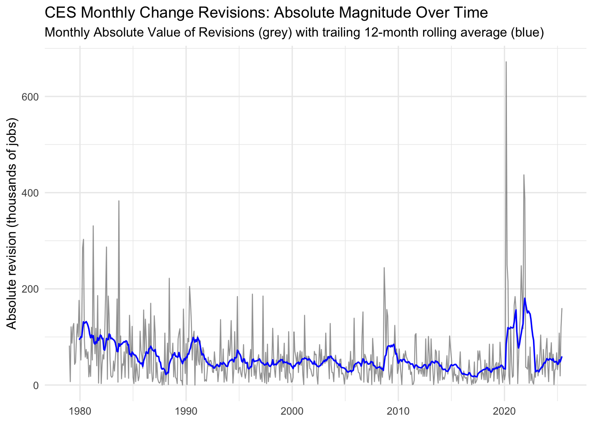
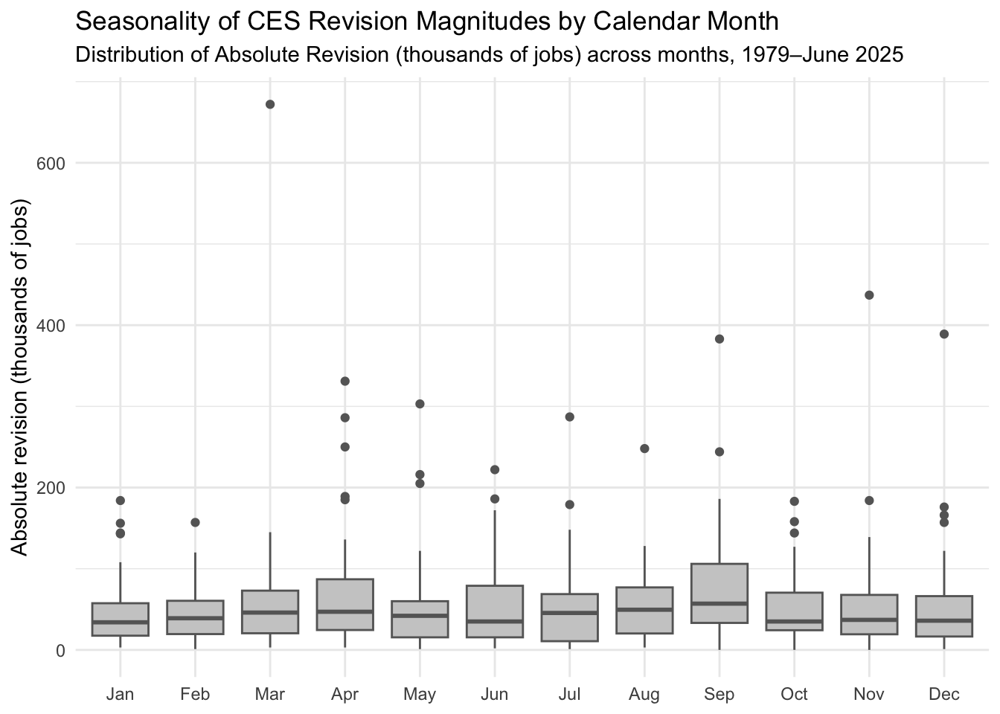
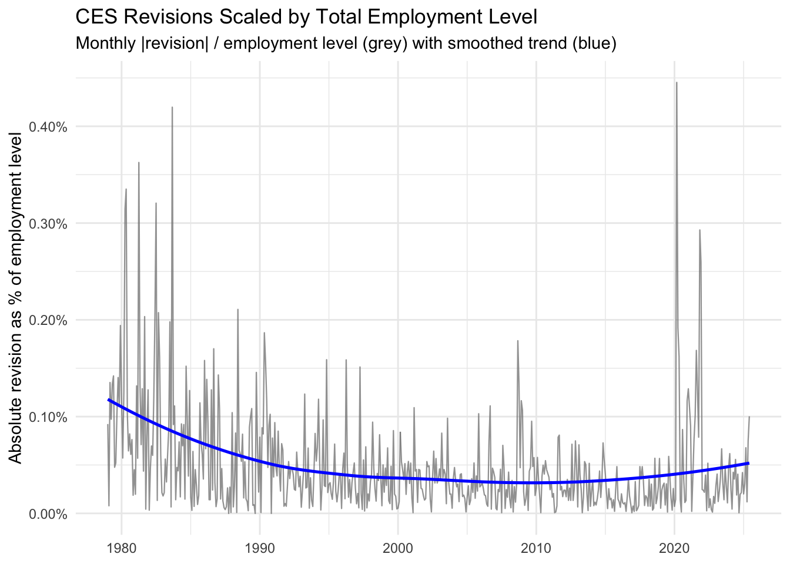
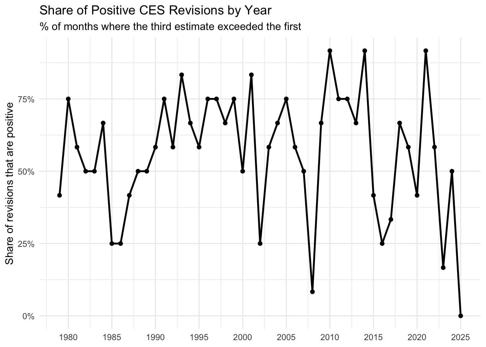

The U.S. Bureau of Labor Statistics (BLS) produces some of the most widely cited measures of the U.S. economy, including monthly indicators of employment. One of the most closely watched releases is the Current Employment Statistics (CES) program, which reports estimates of payroll jobs such as Total Nonfarm Payroll Employment. Because these figures are released quickly, they are also revised as additional survey responses arrive and updates are incorporated.
In this project, I examine CES payroll estimates and their revisions over time to understand how large revisions typically are, whether they exhibit any consistent patterns, and how revision behavior has changed across decades. The goal is to use transparent data collection and reproducible analysis to support a fact-checking framework—evaluating public claims about the accuracy and reliability of CES employment reports using the data itself.
Data Acquisition
The data required for this analysis is downloaded from the Bureau of Labor Statistics (BLS) website. Two specific data sources are required: Final CES Estimates and the revisions to the CES Non-Farm Payroll Employment numbers
This table reports the final, fully revised CES estimate of Total Nonfarm Payroll employment for each month. The level column is the employment stock—the estimated total number of jobs (in thousands) that exist in the U.S. economy in that month after all revisions.
CES Revisions
Code
# CES Revisionsrevisions_resp <-request("https://www.bls.gov/web/empsit/cesnaicsrev.htm") |>req_user_agent("Mozilla/5.0 (Macintosh; Intel Mac OS X 10_15_7) AppleWebKit/537.36 (KHTML, like Gecko) Chrome/142.0.0.0 Safari/537.36") |>req_perform() revisions_html <- revisions_resp |>resp_body_html()# function for parsing through tables year by year (developed on 2024 for accuracy)# each year’s table is conveniently labeled like table#1979, table#2024, etc.revisions_parse_by_year <-function(year, html = revisions_html) { revisions_node <- html |>html_element(paste0("table#", year))if (is.na(revisions_node)) return(tibble(date =as.Date(character()),original =numeric(), final =numeric(), revision =numeric())) revisions_table <- revisions_node |>html_element("tbody") |>html_table(header =FALSE, fill =TRUE)# give columns stable names X1, X2, ...names(revisions_table) <-paste0("X", seq_along(revisions_table))# Keep only real month rows (this avoids “Mean revision” rows, and fixes 2025) revisions_month_pat <-"^(Jan|Feb|Mar|Apr|May|Jun|Jul|Aug|Sep|Oct|Nov|Dec)\\.?" revisions_table <- revisions_table |>filter(str_detect(X1, revisions_month_pat)) |>slice_head(n =12)# Column positions (Seasonally Adjusted → Over-the-month change):# 1st = col 3, 3rd = col 5 revisions_out <- revisions_table |>transmute(month =str_remove(str_trim(X1), "\\.$"),year =as.integer(X2),original =as.numeric(str_remove_all(X3, "[^0-9-]")),final =as.numeric(str_remove_all(X5, "[^0-9-]")),date =ym(paste(year, month)),revision = final - original ) |>select(date, original, final, revision) |>filter(!is.na(date)) revisions_out}# develop/test on 2024revisions_2024 <-revisions_parse_by_year(2024)# revisions_2024# Apply to all years and stop at June 2025ces_revisions <-map_dfr(1979:2025, revisions_parse_by_year) |>filter(date <=as.Date("2025-06-01")) |>arrange(date)
This CES revisions table shows monthly changes in payroll employment reported in thousands. Original is the first published estimate of that month’s change, Final is the third published estimate, and Revision captures how much the reported change was corrected. Positive original/final values indicate job growth (negative indicates job loss), while a positive revision means the month was revised upward (stronger than first reported) and a negative revision means it was revised downward (weaker than first reported).
Data Integration and Exploration
After successfully joining the two tables together, interesting insights can be found.
Code
#JOINces_joined <- estimates_final_ces |>inner_join(ces_revisions, by ="date") |>mutate(year =year(date),decade =floor(year /10) *10,month =month(date, label =TRUE, abbr =TRUE),abs_revision =abs(revision),# revision size relative to overall employment level (both in thousands) --> “Is this big compared to the whole labor market?”rev_share_level = abs_revision / level,# revision size relative to the (final) monthly change (guard against 0)abs_final_change =abs(final),rev_share_change = abs_revision /pmax(abs_final_change, 1) # how big was the revision, relative to the size of the monthly jobs change itself, (.29 --> the correction was 29% of the months estimated job change) ) |>arrange(date)
This joined table also adds four derived columns to quantify revision magnitude and context, two of which are absolute values of the Final estimate and Revision. “Rev Share Level” portrays the absolute revision as a fraction of the total level of employment, showing whether that revision is big or small compared to the overall size of the labor market. “Rev Share Change” portrays the absolute revision as a fraction of the absolute final estimate, which can establish whether the revision was a small tweak or a major correction relative to that month’s reported change.
What and when were the largest revisions, upward (+) and downward (-), since 1979?
The biggest upward revision occurred in November 2021 (+437k jobs, from +210k to +647k), while the largest downward revision occurred in March 2020 (−672k jobs, from −701k to −1,373k). Overall, these extreme revisions cluster around periods of unusually high labor-market volatility, including the early 1980s, the Great Recession, and the COVID-era shock and recovery.
Across January 1979 through June 2025, CES monthly change revisions are slightly positive on average: the mean revision is +11k and the median is +10k, suggesting the third estimate tends to be modestly higher than the first. However, revision size is much larger when we ignore direction: the mean absolute revision is 57k (median 42k), with the 90th and 95th percentiles at 120k and 161k, respectively. In practical terms, revisions of at least 50k occur in about 42% of months, and revisions of at least 100k occur in about 16% of months.
Code
plot1_rev_magnitude <- ces_joined |>arrange(date) |>mutate(abs_revision_roll12 = slider::slide_dbl( abs_revision, mean,.before =11,.complete =TRUE ) ) |>ggplot(aes(x = date)) +geom_line(aes(y = abs_revision), color ="grey50", alpha =0.75, linewidth =0.4) +geom_line(aes(y = abs_revision_roll12), color ="blue", linewidth =0.6) +scale_y_continuous(labels = scales::comma) +labs(title ="CES Monthly Change Revisions: Absolute Magnitude Over Time",subtitle ="Monthly Absolute Value of Revisions (grey) with trailing 12-month rolling average (blue)",x =NULL,y ="Absolute revision (thousands of jobs)" ) +theme_minimal()

Plotted is the absolute size of CES monthly revision corrections (grey), while the 12-month rolling average (blue) highlights the typical revision magnitude over time by smoothing out month-to-month noise. The rolling average remains fairly steady for long stretches but rises sharply during periods of major labor-market disruption—most notably 2020–2021—when revisions were consistently larger than usual. As suggested by the Revision distribution summary statistics, although the average revision is small, the typical absolute revision is much larger, and large corrections are common.
Fraction of Positive, Negative, and Zero Revisions
This table summarizes directional bias by showing how often the third estimate of the monthly payroll change ends up above the first estimate (positive revision), below it (negative revision), or equal to it (zero revision) within each decade. If revisions were perfectly balanced around the initial release, the positive and negative shares would be roughly 50/50 over long periods. Instead, the pattern varies by decade: the 1990s and 2010s tilt clearly toward positive revisions (about 69% and 63%, respectively), meaning first estimates were more often revised upward by the third release. In contrast, the 2020s (through June 2025) lean slightly negative (about 53% negative vs. 47% positive), suggesting a modest recent shift toward downward revisions—though this period includes fewer months than a full decade.
Code
# VIZ 2 - percent % revisions by yearplot2_pos_by_year_df <- ces_joined |>group_by(year) |>summarise(share_positive =mean(revision >0),n_months =n(),.groups ="drop" )plot2_pos_by_year <- plot2_pos_by_year_df |>ggplot(aes(x = year, y = share_positive)) +geom_line(linewidth =0.9) +geom_point(size =1.6) +scale_y_continuous(labels =percent_format(accuracy =1)) +scale_x_continuous(breaks =seq(1980, 2025, by =5)) +labs(title ="Share of Positive CES Revisions by Year",subtitle ="% of months where the third estimate exceeded the first",x =NULL,y ="Share of revisions that are positive" ) +theme_minimal()
This figure plots the share of months with upward revisions each year (percent positive). While the line is noisy year-to-year because each year has only 12 months (and 2025 is partial), the overall pattern manifests: the 1990s and 2010s are usually above 50%, while the 2020s are more mixed and often below 50%, consistent with the decade’s slight tilt toward downward revisions so far.
How large are revisions relative to the actual employment level?
Code
stat4_by_decade <- ces_joined |>group_by(decade) |>summarise(months_included =n(),mean_share =mean(rev_share_level, na.rm =TRUE),median_share =median(rev_share_level, na.rm =TRUE),p95_share =quantile(rev_share_level, 0.95, na.rm =TRUE),.groups ="drop" ) |>mutate(`Mean Revision Share of Level`=percent(mean_share, accuracy =0.001),`Median Revision Share of Level`=percent(median_share, accuracy =0.001),`95th pct Revision Share of Level`=percent(p95_share, accuracy =0.001) ) |>select(Decade = decade,Months_Included = months_included,`Mean Revision Share of Level`,`Median Revision Share of Level`,`95th pct Revision Share of Level` ) |>arrange(Decade)
This table puts revisions in context by scaling them to the overall size of the labor market. Even when absolute revisions look large, the typical revision is only a few hundredths of one percent of total employment: the median revision share declines from about 0.060% in the 1980s to 0.021% in the 2010s, indicating revisions became smaller relative to the payroll base over time. The 2020s show a rebound in the upper tail (95th percentile: 0.186%), consistent with a more volatile revision environment, even though the typical (median) scaled revision remains small (0.033%).
Code
plot3_scaled_over_time <- ces_joined |>ggplot(aes(x = date, y = rev_share_level)) +geom_line(color ="grey50", alpha =0.75, linewidth =0.4) +geom_smooth(color ="blue", se =FALSE, linewidth =0.9) +scale_y_continuous(labels =percent_format(accuracy =0.01)) +labs(title ="CES Revisions Scaled by Total Employment Level",subtitle ="Monthly |revision| / employment level (grey) with smoothed trend (blue)",x =NULL,y ="Absolute revision as % of employment level" ) +theme_minimal()
The plot shows each month’s absolute revision as a percent of total employment (grey), while the blue smoothing line summarizes the long-run trend in scaled revision size. The smoothed line declines steadily from the late 1970s/1980s into the 2000s–2010s, consistent with the decade results showing the median revision share falling from 0.060% (1980s) to 0.021% (2010s). The trend then turns upward in the 2020s, reflecting renewed volatility.
Seasonality: Which months typically have larger revisions?
September stands out in the table, with the highest mean absolute revision (~80k) and the highest median absolute revision (~57k), indicating both frequent and occasionally large adjustments. In contrast, early-year months like January–February show smaller typical revisions (median roughly 34–39k), implying more stable estimates on average. Directionally, September’s mean revision is strongly positive (~+53k) along with months like August and April. This could suggest that those months are more often revised upward overall, while October (about −18k) shows a modest tendency toward downward revisions.
Code
plot4_seasonality <- ces_joined |>ggplot(aes(x = month, y = abs_revision)) +geom_boxplot(fill ="grey80", color ="grey40", outlier_alpha =0.35) +scale_y_continuous(labels =comma_format(accuracy =1)) +labs(title ="Seasonality of CES Revision Magnitudes by Calendar Month",subtitle ="Distribution of Absolute Revision (thousands of jobs) across months, 1979–June 2025",x =NULL,y ="Absolute revision (thousands of jobs)" ) +theme_minimal()

This boxplot shows the distribution of absolute revision magnitudes by calendar month, allowing us to compare both the “typical” revision size (the median line) and the likelihood of unusually large revisions (the spread and outliers). Consistent with our seasonality table, September stands out with a higher median and a wider spread, indicating that revisions tend to be larger in early fall than in many other months. Several months also contain rare but extreme outliers showing that while most revisions are moderate, a small number of months drive very large one-off adjustments (ex. March 2020).
Are revisions larger when the underlying (final) monthly change is larger?
The correlation between the absolute size of the final monthly payroll change and the absolute size of the revision is 0.197, indicating a weak positive relationship. In other words, months with larger employment swings tend to have somewhat larger revisions, but the relationship is not strong—large changes do not automatically imply large revisions, and many months deviate from this pattern.
Code
# 6B) Mean/median |revision| by bins of |final monthly change|# Using terciles (small/medium/large) for a simple, data-driven splitstat6_bins <- ces_joined |>mutate(change_bin =ntile(abs_final_change, 3),change_bin =factor( change_bin,levels =c(1, 2, 3),labels =c("Small change (lowest 1/3)","Medium change (middle 1/3)","Large change (top 1/3)") ) ) |>group_by(change_bin) |>summarise(months =n(),mean_abs_final_change =mean(abs_final_change, na.rm =TRUE),median_abs_final_change =median(abs_final_change, na.rm =TRUE),mean_abs_revision =mean(abs_revision, na.rm =TRUE),median_abs_revision =median(abs_revision, na.rm =TRUE),share_months_rev_100k =mean(abs_revision >=100, na.rm =TRUE), # share of months in each bin where absolute revision is at least 100k jobs.groups ="drop" )
Revisions tend to be larger when the labor market is moving more sharply, especially in the “large change” months, which show both the largest typical revision sizes and the highest share of 100k+ revisions. However, because the overall correlation is only 0.197, the relationship is real but modest. Revision size still varies widely even among months with similarly large underlying payroll changes.
Statistical Analysis
While the patterns in the data can be visually striking, descriptive trends alone are not enough to support strong claims about bias or “unreliability.” Formal statistical inference helps distinguish meaningful differences from variation that could plausibly arise by chance. In this section, I use hypothesis tests to evaluate whether key differences in CES revision behavior are statistically significant.
Question 1: Has the average proportional revision size (absolute revision / level) changed post-2020?
Code
ces_test <- ces_joined |>mutate(period =if_else(lubridate::year(date) >=2020, "post_2020", "pre_2020"),# "Extreme proportional revision" indicator:# TRUE if |revision| is at least 0.1% of the employment level for that monthbig_share_01pct = rev_share_level >=0.001 ) |>filter(!is.na(rev_share_level))test_A <- ces_test %>%t_test(rev_share_level ~ period, order =c("pre_2020", "post_2020"))
To investigate this question, a two-sample t-test is used to compare the average proportional revision size (how big a revision is relative to the total employment level that month) across two time periods: pre-2020 and post-2020. To make this comparison possible, the dataset is split into those two groups using the year of each observation, testing whether the mean value of rev_share_level differs between the groups.
The test produces a p-value of 0.2422, which is well above a typical 0.05 cutoff, meaning the data does not provide strong evidence that proportional revisions became systematically larger or smaller after 2020. Any difference we see between the pre-2020 and post-2020 averages could reasonably be due to normal month-to-month variability rather than a clear structural change.
Question 2: Did the probability of an “extremely large proportional revision” (≥ 0.1% of employment) change pre-2020 vs post-2020?
Code
test_B <- ces_test %>%prop_test(big_share_01pct ~ period, order =c("pre_2020", "post_2020"))
This second question is investigated with a two-sample proportion test (prop_test), which compares the share of months flagged as having an “extremely large proportional revision” when the revision is at least 0.1% of total employment—between pre-2020 and post-2020.
The result is a p-value of 0.166, which means we do not have strong evidence that the probability of these extreme proportional revisions changed after 2020. In other words, the observed difference in the share of “extreme” months across the two periods could plausibly be due to routine variation rather than a clear shift in revision behavior.
Fact Check: What CES Revisions Do (and Don’t) Show
Both claims below cite “large revisions” as evidence that CES jobs numbers are inaccurate, biased, or even manipulated. Revisions are real—and sometimes large in raw job counts—but the key question is whether the pattern of revisions supports those stronger conclusions.
Claim 1 (Trump administration)
Claim (paraphrased): The BLS Commissioner (Erika McEntarfer) was fired because CES jobs numbers were inaccurate and/or politically manipulated, with large revisions offered as evidence.
What this claim would require
To support the “inaccurate/manipulated” narrative using revisions alone, we would expect revisions to be systematically abnormal—consistently larger than historical norms, especially after 2020, and not explainable by ordinary labor-market volatility.
What the CES revision evidence shows instead
1) Big revisions happen—but they cluster in high-volatility periods, not as a constant pattern.
The largest upward and downward revisions tend to occur around major disruptions (for example, the COVID-era shock), which is consistent with measurement difficulty during turbulent labor-market conditions—not proof of manipulation.
2) Typical revisions are much smaller than the headline extremes.
Even though extreme months exist, the typical month looks far more moderate: the average revision is slightly positive, but the typical absolute revision is much larger when we ignore direction, and 100k+ revisions occur in a minority of months.
3) Revisions are usually stable over time, with sharp increases during major disruptions.
The rolling average highlights long stretches of stability punctuated by spikes during periods of major labor-market disruption (notably 2020–2021). This pattern is consistent with volatility-driven revisions rather than a persistent, systematic distortion.
4) Scaled to the size of the labor market, revisions are usually tiny.

Scaling revisions by total employment puts them in context: what sounds like a large number in raw job counts is typically only a small fraction of the overall labor market. The long-run pattern shows scaled revisions generally declining into the 2000s–2010s, with a modest uptick in the 2020s that aligns with a higher-volatility environment.
5) Statistical test linked to this claim: no evidence that average proportional revision size changed after 2020.
This two-sample t-test compares the average proportional revision size pre-2020 vs. post-2020. With a p-value of 0.2422, we fail to reject the null at the 5% level, meaning the data do not provide strong statistical evidence of a post-2020 shift in the average scaled revision size.
Verdict: Mostly False
Revisions—including some very large ones—are real, but the evidence fits what we’d expect from normal revision mechanics that become harder during major shocks (like 2020–2021). The scaled patterns and the hypothesis test do not support the stronger leap to “systematically inaccurate” or “politically manipulated” jobs numbers based on revisions alone.
Claim 2 (Fake politician)
Fake Claim: A fake politician claims CES jobs numbers are so unreliable that the process is basically a “random number generator,” and the reporting should be changed (ex. produced less frequently than monthly).
What this claim would require
If the process were essentially “random,” we would expect little structure in revisions—no recurring patterns across time, no consistent directional behavior, no systematic differences by calendar month, and no meaningful relationship between revision size and underlying labor-market volatility.
What the CES revision evidence shows instead
1) Revisions show directional structure over time (not pure randomness).

The share of positive revisions varies across decades and fluctuates year to year. That kind of time structure is not what we’d expect if revisions were just random noise around the initial estimate.
2) Revisions show seasonality—another sign of structure rather than randomness.
Revision magnitudes differ by calendar month, with some months (notably early fall) tending to have larger revisions than others. A recurring month-of-year pattern is strong evidence that the revision process has systematic features—not a “random number generator.”
3) Revision size is related (modestly) to underlying labor-market volatility.
Revisions tend to be larger when the labor market is moving more sharply. The correlation between absolute final monthly changes and absolute revisions is positive (though weak), and the bin summary shows “large change” months have larger typical revisions and a higher share of 100k+ revisions. This is consistent with a process that becomes harder during volatility—not randomness.
4) Statistical test linked to this claim: no evidence that extreme proportional revisions became more common post-2020.
This two-sample proportion test compares the share of months with an “extreme proportional revision” (≥ 0.1% of total employment) pre-2020 vs. post-2020. With a p-value of 0.166, we fail to reject the null at the 5% level, meaning the data do not show strong evidence that these extreme proportional revision months became more common after 2020.
Verdict: Mostly False
While revisions can be large in raw job counts—especially in volatile periods—the data show clear structure in revision behavior across time, across months, and in its modest relationship to labor-market volatility. That is inconsistent with the claim that the process is so unreliable that it is effectively random, and the hypothesis test does not indicate a statistically clear post-2020 increase in extreme proportional revision months, further suppressing claims of unreliability.